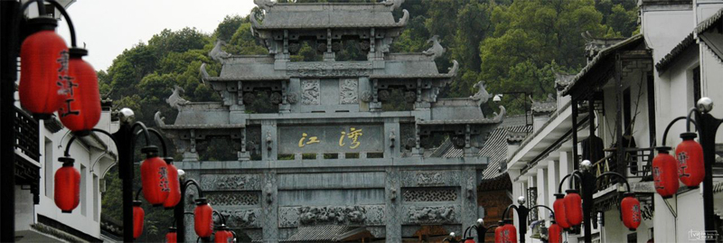
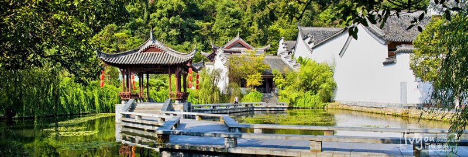

江湾位于江西上饶市婺源县城东二十公里，是江泽民的祖居。 江湾地处三山环抱的河谷地带，东有灵山，南有攸山，北有后龙山，一条梨园河由东而西，呈S形从三山谷地中穿行，山水交融，给婺源江湾平添了许多灵气。婺源江湾人引以为骄傲的是后龙山，他们把本族的人丁兴旺、英贤辈出归功于后龙山的龙脉好。自古以来，婺源江湾人不准任何人动后龙山上一草一木，古有“杀子封山”，今有“杀猪封山”。数百年间没有人敢上后龙山砍柴。后龙山的植被由此保护得十分完好。如今走进后龙山，就如同走进了原始森林，满山古木，遮天蔽日，给依山而建的婺源江湾古村增添了不少神韵。 自唐以来，江湾便是婺源通往皖、浙、赣三省的交通要塞，为婺源东大门。这里山水环绕、风光旖旎、文风鼎盛、群贤辈出，孕育了明代隆庆年间户部侍郎江一麟、明代工部主事江宏晚、明代朝廷太医江一道、清代著名经学家、音韵学家江永、清代户部主事江桂高、清末著名教育家、佛学家江谦等一大批学士名流。村人著述多达92部，其中15部161卷被列入《四库全书》。任七品以上仕宦者25人，是当之无愧的婺源“书乡”代表。村中至今还保存着三省堂、敦崇堂、培心堂、滕家老屋等一大批徽派古建筑和江永纪念、南关亭、东和门、徒戎桥、水坝井等景点，其中“仙人桥”是古人实践风水理论的杰出典范，“北斗七星井”体现了“天、地、人合一”的中国风水学最高原则，南侧梨园河呈太极图“S”形，古村古风古韵，极具历史价值和观赏价值。
